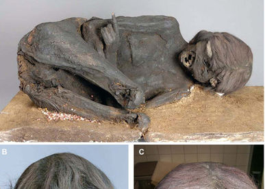

Washington. EFE La momia de una mujer joven que padecía mal de Chagas, da indicios de un fuerte golpe en la cabeza que pudo haber sido parte de un homicidio ritual, hace cinco siglos, en Suramérica, según un artículo difundido por Public Library of Science.
La momia, hallada en la costa del Pacífico, cerca de la frontera entre Chile y Perú, y que durante casi un siglo permaneció sin identificación en la colección arqueológica del estado de Baviera, en Alemania, fue examinada por Stephanie Panzer, del Centro Murau de Trauma, bajo la dirección del paleontólogo Andreas Nerlich, de la Universidad de Múnich, en Alemania.
Para entender mejor el origen y trayectoria de la mujer, los científicos examinaron el esqueleto, los órganos y el ácido desoxirribonucleico (ADN) empleando técnicas de la investigación antropológica. Además, se escaneó el cuerpo, se hizo análisis de isótopos, histología, identificación molecular y reconstrucción forense de la lesión.
Análisis. El método de datación por radiocarbono indica que la mujer vivió entre 1450 y 1640 y tenía de 20 a 25 años cuando murió.

Las fibras del tejido de la diadema que cubre el cráneo proceden de llama o alpaca; es decir, de los camélidos suramericanos.
Los análisis de isótopos de nitrógeno y carbono en su cabello muestran una dieta que, probablemente, incluía maíz y pescado, lo cual corresponde con un origen y una vida en las regiones costeras.
La momia muestra un engrosamiento significativo del corazón, el recto y los intestinos, que son características de las personas afectadas por el mal de Chagas , enfermedad causada por el parásito Trypanosoma cruzi y transmitida a los seres humanos por insectos como las chinches, que se alimentan de sangre.
El artículo dijo que el análisis del ADN de los parásitos hallados en el tejido del recto, también sustentan la presencia del mal de Chagas, condición que la mujer padeció desde la infancia.
El cráneo de la momia está deformado por las bandas atadas que son típicas de la cultura inca; la tomografía computarizada muestra una “destrucción casi completa de los huesos del rostro y la frente”, agregó el estudio.
“El tipo de destrucción indica un golpe masivo sobre el centro del rostro”, expresaron los investigadores en su estudio. “Esto sustenta la hipótesis de un homicidio ritual del tipo ya descrito anteriormente en momias suramericanas, de individuos que sufrían la enfermedad crónica grave de Chagas”.
Un tribunal estatal de Mannheim (Alemania) ha desestimado los casos de la compañía IPcom contra Apple y HTC a las que acusaba de infringir una serie de patentes. IPcom reclamaba una penalización de 2.000 millones de dólares (1.570 millones de euros) para Apple.
El mencionado tribunal no ha dado una explicación oral del veredicto, pero sí lo ha anunciado en un comunicado al que ha tenido acceso DW.de. En el caso de Apple, la patente que IPcom señalaba como propia era la número EP 1841268, que aseguraba de la había registrado en la Oficina Europea de Patentes y que estaba relacionada con una tecnología móvil que permite el acceso prioritario a ciertas llamadas de teléfonos móviles, incluso cuando una red está saturada.
La compañía de IPcom cuenta con una cartera de 1.200 patentes en el sector de las comunicaciones móviles, y afirmaba que había comprado la mencionada patente a Bosch en 2007.
No obstante, la Oficina Europea de Patentes ha reconocido recientemente a IPcom como propia esa patente, por lo que se espera que la compañía recurra el caso y, de ser aprobada la penalización que exige a Apple, sería una de las mayores cifras en relación a daños por infracción de patentes. Según IPcom, esa cantidad la fijó basándose en la ley de copyright alemana y tuvo en cuenta para ello los ingresos, beneficios y valor de marca de Apple.
Por otro lado, IPcom lleva años también en guerra de patentes con HTC, aunque ha carecido de éxito hasta el momento.
Sergio Martín-Serrano Delgado